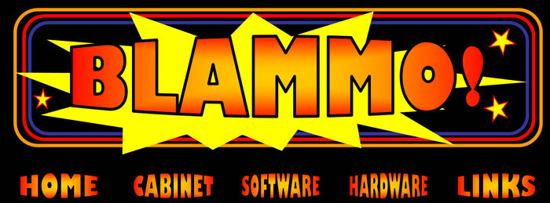

The Software The greatest thing about building your own
arcade cabinet is you can put whatever game you want on it. You can find
online "roms" for nearly every arcade game ever made and play them using a
program called an "emulator". I used the emulators "MAME" and "DAPHNE" to
play the 80 or so games installed in my cabinet. I used a windows
machine, but both have MAC support. See the "links" section for more
details.
Since the machine can play so many games, it seemed
like a good idea to put in a menu system so you could choose which game to
play using the controllers. I used a program called "Glaunch".
A nice thing about GLaunch is that you
can choose an image to be displayed in the background when you highlight a
game. Also you can give it a list of mp3s to play while the menu is
running.
|